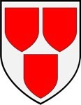

1502284 Sir William de la Haye, 1st Lord Hay
Lord. Blev ca 62 år.

Far:
Mor:
Född:
omkring 1374 Pearth, Pearthshire, Scotland. [1]
Död:
1436 Turriff, Aberdeenshire, Scotland. [1]
Barn:
Personhistoria
1374?
Födelse omkring 1374 Pearth, Pearthshire, Scotland
[1]
1436
Död 1436 Turriff, Aberdeenshire, Scotland
[1]
Källor